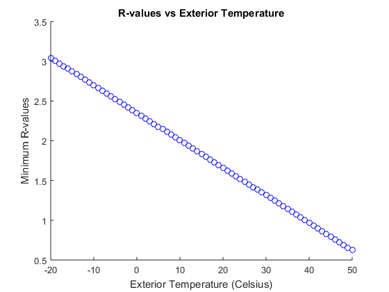

function [] = problem8_3()
Tinterior = 68;
Texterior = linspace(-20, 50, 71);
A = 40;
t = 24;
totalIncidentEnergy = 1387.666667 * A;
Rvalues = ((Tinterior - Texterior).*A.*t)./(totalIncidentEnergy/2);
figure()
hold on
for j=1: length(Texterior)
plot(Texterior(j), Rvalues(j),'ob');
if mod(j-1,10) == 0
fprintf('Exterior Temperature: %g | R-value: %g\n',Texterior(j),Rvalues(j));
end
end
xlabel('Exterior Temperature (Celsius)');
ylabel('Minimum R-values');
title('R-values vs Exterior Temperature');
end
Exterior Temperature: -20 | R-value: 3.04396
Exterior Temperature: -10 | R-value: 2.69805
Exterior Temperature: 0 | R-value: 2.35215
Exterior Temperature: 10 | R-value: 2.00625
Exterior Temperature: 20 | R-value: 1.66034
Exterior Temperature: 30 | R-value: 1.31444
Exterior Temperature: 40 | R-value: 0.968532
Exterior Temperature: 50 | R-value: 0.622628
